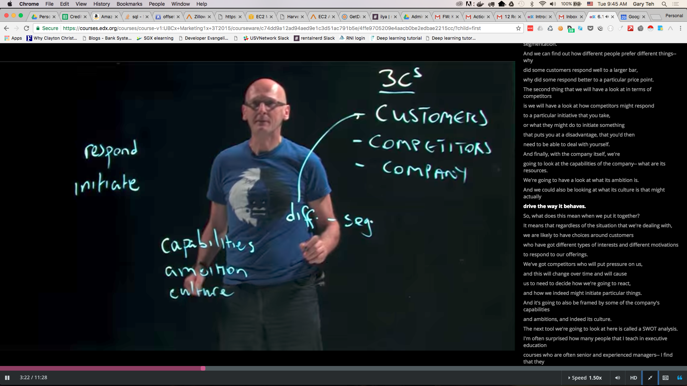
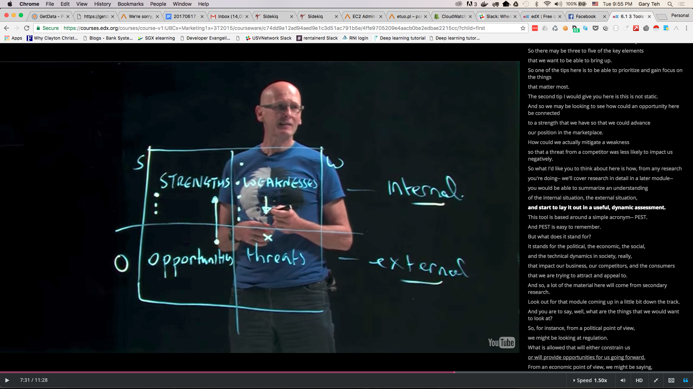

Trends
- Real time marketing
leveraging of events that are currently taking place to put your brand out there
- To be able to do so need to make sure the core marketing materials are already available so as to easily capitalize on the opportunities
Tools

- PEST - trends
Political changes
- Economic shifts in disposable income
- Social shifts in demographic behavior
- Technology shift that drives cost down and output up

- 3Cs
Consumers
- Competitors
- Company

- SWOT
Our Strength
- Our Weakness
- Opportunities we see outside
- Threats of new competitors coming into space
Market Research
- Objective - gain Actionable insights
Actionable Insights - Future
- Information - Present
- Data - Past
- Dimensions
Primary Research versus Secondary Research - expensive versus cheap
Survey
- Focus Group
- In depth interviews
- Observation
- Qualitative versus Quantitative
- Trade offs
speed, cost, risk
- quality
- Beware of analysis paralysis
Market Segmentation
- Different groups of people with different preferences
respond to different value proposition
- segmentation approach
demographics - broad filter
age
- geo
- gender
- psychographics - SRA
values
- attitudes
- lifestyles
- Pricing
- Loyalty segmentation
repeat buyer
- brand switcher
- brand neutral - buy base on price
- loyal to competitors
- brand new
- Buying behavior
how often they buy - purchasing cycle
- how much they buy and their buying process
- size of company
- Targeting with different products and marketing materials
Need to zero in marketing materials on segment that it is targeted for
- Need to ensure marketing materials does not leak into segment that it is not targeted for to prevent confusion
- Serve the selected segment better versus competitors to make compelling business case
{kind=link}
{kind=link}
{kind=link}